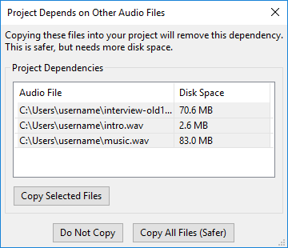
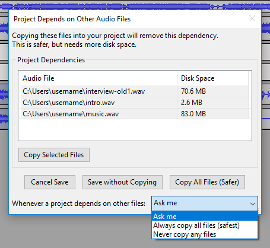

Dependencies Dialog
Uncompressed WAV and AIFF files that are imported into a project with the "Read uncompressed audio files directly from the original (faster)" option in Import / Export Preferences are not copied into the project. Instead, Audacity keeps a reference to these files, and the project is dependent on them. Dependencies Dialog lists these dependencies and allows you to optionally remove them. You may select some, none or all the files to be copied in.
- Accessed by or when saving a project that depends on other audio files
- 
If you select "Make a copy of uncompressed audio files before editing (safer)" in Import / Export Preferences, your projects will never have dependencies, but more disk space may be used to store the project, and importing WAV or AIFF files will be slower.
Project Dependencies
This dialog appears when you click and the project depends on other files.
- File list: When the dialog opens, you can move into the list using the keyboard by pressing <up arrow> (on Mac, focus is already in the list). You can resize the list columns by hovering the mouse over the boundary between them and then drag when the pointer changes to arrows. On Windows, hovering over a file name shows a tooltip containing the complete path to the file.
- Audio File: Lists the uncompressed files that were imported using the "Read uncompressed audio files directly from the original (faster)" option in Import / Export Preferences.
- Disk space: Shows the amount of additional disk space that will be used by the project if the file(s) are copied in. The disk space shown will depend on the default sample format of the project as set in Quality Preferences.
- Copy Selected Files: Copies the files selected in the list into the project. The project no longer depends on the selected files but still depends on the unselected files.
- Do Not Copy: Dismisses the dialog (but continues to save the project if you were saving it) without copying any of the listed files into the project. The project will continue to depend on the listed files, so you must not move, rename or delete those files, or the folder they are in.
- Copy All Files (Safer): All the listed files will be copied into the project, removing all the dependencies. You can then safely move, rename or delete those files if you wish.
When saving a project that depends on other files
This similar dialog appears when you save a project that has dependencies, and have chosen in Projects Preferences to be asked whether dependent files should be copied in or not.
- 
As with the above version, you may select some, none or all the files for copying in. This dialog gives you the option of directly setting your preference for copying in behavior when saving a project.
- Copy Selected Files Saves the project while copying only the files selected in the list into the project. The project no longer depends on the selected files but still depends on the unselected files.
- Cancel Save: Allows you to cancel saving of the project, without copying any of the listed files into it. You will be asked to say "Yes" if this is your intention. The project will continue to depend on the listed files.
- Save without Copying: Save the project without copying in the dependent files. The project will continue to depend on the listed files.
- Copy All Files (Safer): Saves the project while copying all the listed files into the project, removing all the dependencies. You can then safely move, rename or delete those files if you wish.
- Whenever a project depends on other files:
- Ask me The default option; the Dependencies Dialog will always appear when saving a project that has dependencies.
- Always copy all audio (safest): On all future occasions when saving a project that has dependencies, Dependencies Dialog will not appear, and all dependent files will be copied into the project.
- Never copy any audio: On all future occasions when saving a project that has dependencies, Dependencies Dialog will not appear, and no files will be copied into the project. The project will continue to depend on the listed files.
You can change your decision in this menu at any time by going to Projects Preferences.